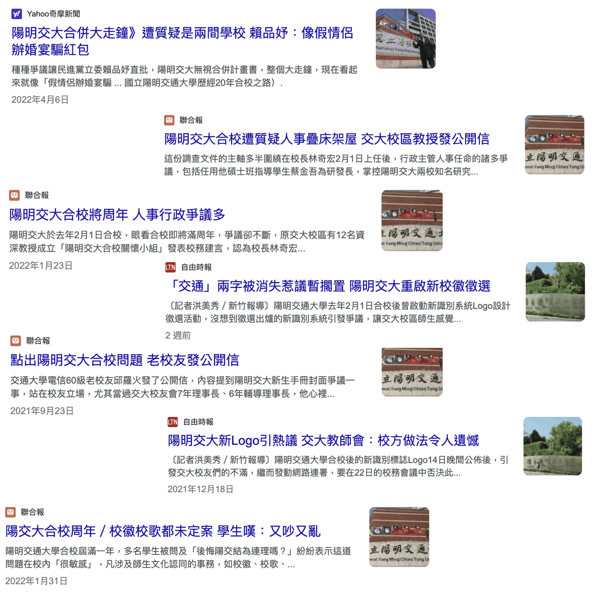
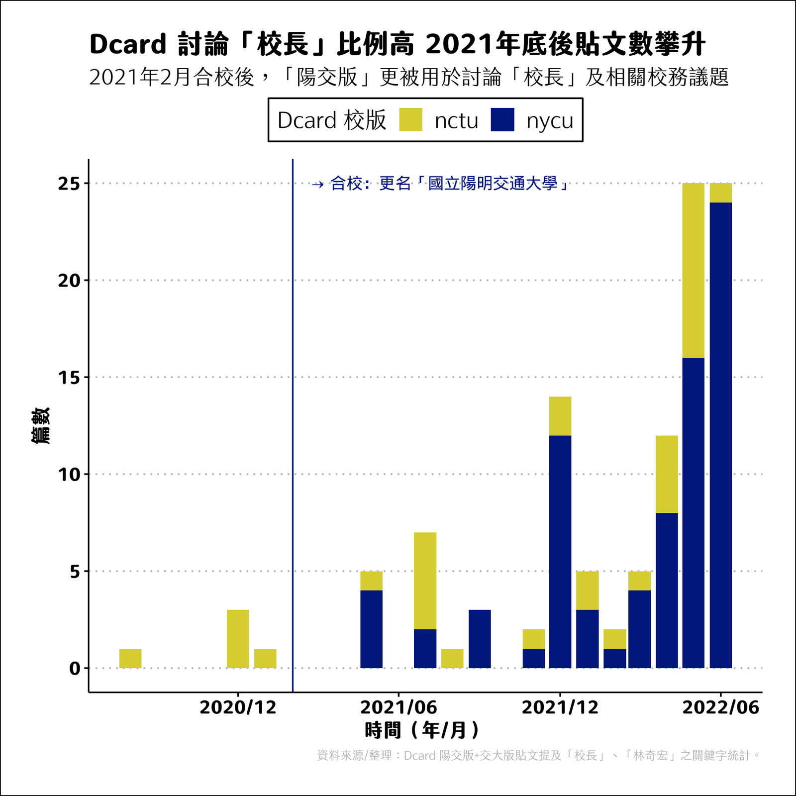
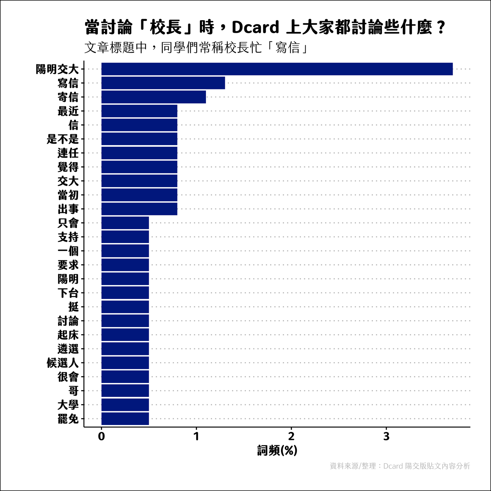
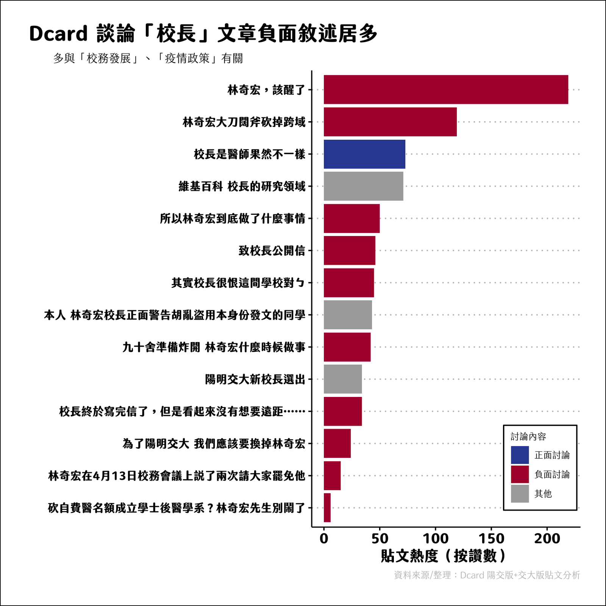
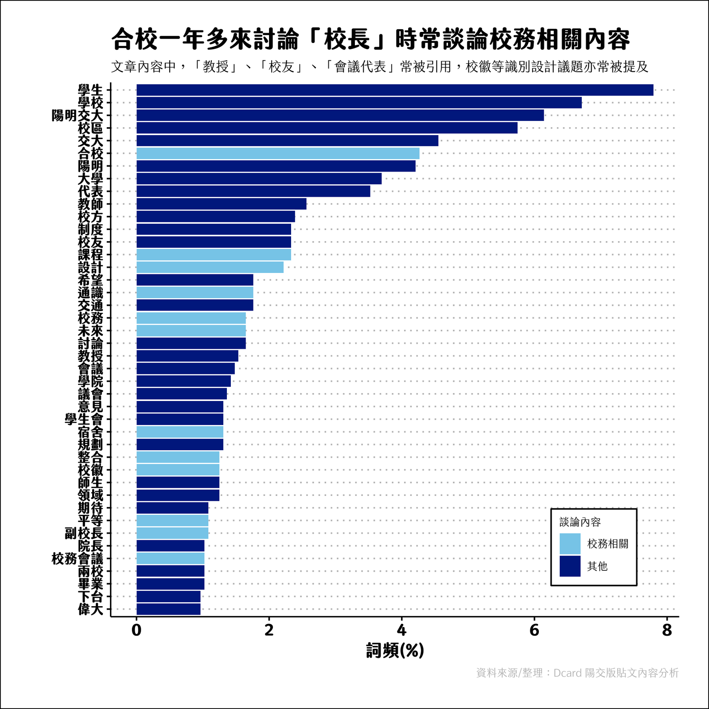

This article is written in Chinese.
2022.07.19 · 數據圖表 · 生活紀實
變與不變的掙扎(上)——從 Dcard 論壇看陽明交大合校風風雨雨
透過分析 Dcard 陽明交大版、交大版，看近期陽明交大合校之風風雨雨，以及以學生會過來人的觀點，談談合校這回事。
寫這篇其實抱持著有點痛苦（？）的心情，因為被迫重新回頭看一些爭議，只覺得有點無奈與感嘆。--> 這篇某種程度上也算是一篇...涉己事務
筆者於合校期間擔任四年學生代表
2021 年 2 月，國立陽明大學與國立交通大學合併為「國立陽明交通大學」，堪稱臺灣頂尖大學之創舉。本次合併屬於「新設合併」，意即原先的兩所大學於名義上皆「消滅」，未來將以「國立陽明交通大學」持續深耕學術領域。
合校路漫漫，於 1999 年陽明大學與交通大學即曾經討論合校但未果； 2018 年陽明大學校務會議決議優先與國立交通大學進行合校議約。2019 年兩校校務會議分別通過合校意向書並函報教育部。
合校前後，基於對於兩所學校的深厚歷史與情感，雙方強調「對等」，希冀透過兩所頂尖大學的合校，培育兼具科學與人文素養的優秀人才，外界也認為若能結合過去陽明大學之醫牙、生醫領域與交通大學電資領域，將可能開啟嶄新高教篇章。
2021 年 2 月至今已一年有餘，然而在這段合校後過程中並不平靜。外部來看，部分校友基於過去對於原學校的情感，不願意「自己的學校被消失」，以及部分對於「對等」二字有所歧見，盡皆反映在校徽、識別系統設計、校歌、校務會議席次等議題上；內部來看，許多法規制度整合時程漫長，需審慎考量原先兩校實務運作狀況，到底要「重新建立一套制度」、「維持兩套制度」、「依照某校過去舊有的制度」，時常作為會議代表的學生所見到的討論，皆呈現三方意見之拉鋸，抑或不滿。而這些不滿的指責最終皆指向目前在任的校長林奇宏。

而作為學生，多半僅能從學生會的粉絲專頁與媒體報導相關「校務」爭議， Dcard 校園版也成為同學們討論相關事務的重要地點。
因應合校， Dcard 讓原陽明大學、原交通大學的同學，都盡皆能在「陽明大學版」、「交通大學版」、「陽明交通大學版」三校版皆可自由發文，然而陽明大學版長期並不熱絡，因此占不納入分析範圍。根據 Dcard 數據顯示，合校過後，陽明交大的同學透過 Dcard 討論事務更加熱絡。

其中，高峰大多在選課前後，同學們透過 Dcard 詢問相關課程評價等。
然而，有趣的是，因應報章雜誌報導相關合校爭議， Dcard 也漸漸開始有同學發表看法，引發許多討論。其中「校長」相關關鍵字討論熱度激增，同學們更常常透過「陽明交大版」發表相關看法與討論。

其中，許多同學諷刺校長與校內同學溝通常常用「email 寫信」，常常以此譏笑諷刺，認為校長並沒有嘗試解決問題，而僅會以此方式與學生溝通。 此外，相關討論包含要求校長「下台」、稱校長在爭取「連任」等。

討論校長大多數的文章負面敘述居多，同學們僅能依照媒體報章的片面資訊與相關教師的轉述進行討論，而這些「聳動」、「激烈」的標題用語熱度皆相當高，且易「引發眾怒」。
其中，關於課程制度、防疫、第二屆校務會議席次、校徽討論熱度最高。


下一篇會在花多一點篇幅談論這些所謂的「爭議」，與大家討論的內容，這篇止於數據分析部分，希望先呈現大家如何看待這些複雜且紛亂的校務問題。
不過，相較於其他校個版，陽明交大使用 Dcard 的熱度已相對較低，但仍為主要陽明交大同學使用的論壇之一。（此外，也會使用清交二手 facebook 社團版討論與交易二手物）
Dcard 討論太過紛亂，且以曾經擔任學生會重要職務的觀點，片面資訊極多，甚至自己也認為因 Dcard 屬於匿名版，所以有人也刻意在爭議時刻前後反覆發批評校務的文字，且討論熱度與迴響皆不低。自己常常忍不住下海嘗試「闢謠」，並將事情脈絡講的「更加清楚」。
例如曾經有人提到因為合校導致經費排擠，學校有些雜誌不再訂閱起初引發討論，然而自己就趕緊跳出來闢謠，後續陽明交大圖書館官方也做出回應闢謠，該名po文者後續也刪去煽動性言論的留言。
類似的事件也常常發生，但多半來不及闢謠，且許多討論皆是虛實之間的灰色地帶，更難以談論到底什麼才是「正確」的。
這也是在輿論世界裡，我最感到無助且無力之處。
本篇透過爬梳 Dcard 陽明交大版與交大版 2019 年至 2022 年 7 月之所有文章，針對相關關鍵字進行詞頻分析所得之結果。